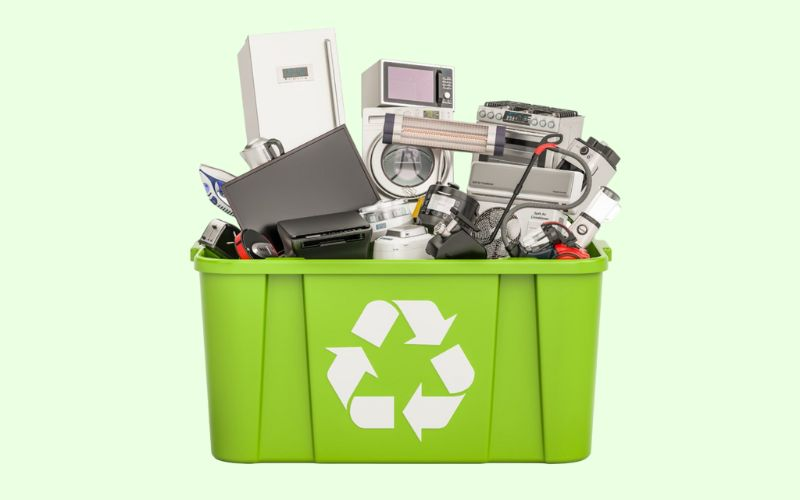
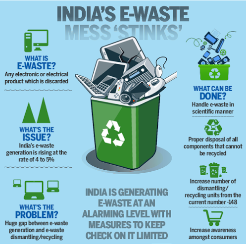

What is Ewaste ?
E-waste is a popular, informal name for electronic products nearing the end of their
"useful life." Mobile Phones, Smart Phones, Feature phone, I Phones, Laptop, Desktop,
Thin Clients, Air Conditioners, Televisions, Refrigerators, Washing Machines, VCDs,
stereos, copiers, and fax machines are common electronic products. Many of these
products can be reused, refurbished, or recycled.
E-waste has been one of the fastest growing waste streams in the world. While e-waste
contains valuable materials such as aluminium, copper, gold, palladium and silver, it also
contains harmful substances like cadmium, lead and mercury. In the absence of proper
awareness, disposing e-waste in landfill can result in toxic emissions to the air, water and
soil and pose a serious health and environmental hazards.

Roughly 40 million metric tons of electronic waste (e-waste) are produced globally each year, and about 13 percent of that weight is recycled mostly in developing countries.
About 9 million tons of this waste—discarded televisions, computers, cellphones, and other electronics—are produced by the European Union, according to the United Nations Environment Programme (UNEP).
And UNEP notes that this estimate of waste is likely too low.
Informal recycling markets in China, India, Pakistan, Vietnam, and the Philippines handle anywhere from 50 percent to 80 percent of this e-waste,
often shredding, burning, and dismantling the products in “backyards.” Emissions from these recycling practices are damaging human health and the environment.
Developing countries with rapidly growing economies handle e-waste from developed countries, and from their own internal consumers. Currently, an estimated 70 percent of e-waste handled in India is from other nations, but the UNEP estimates that between 2007 and 2020, domestic television e-waste will double, computer e-waste will increase five times, and cell phones 18 times.
E-waste is an important global environmental and health issue. Promising policy responses have arisen from the European Union, which is defining the source as responsible for e-waste. With this approach, manufacturers are required to eliminate dangerous toxins from production.

.jpeg)
Find more information on:
https://www.prb.org/resources/the-human-and-environmental-effects-of-e-waste